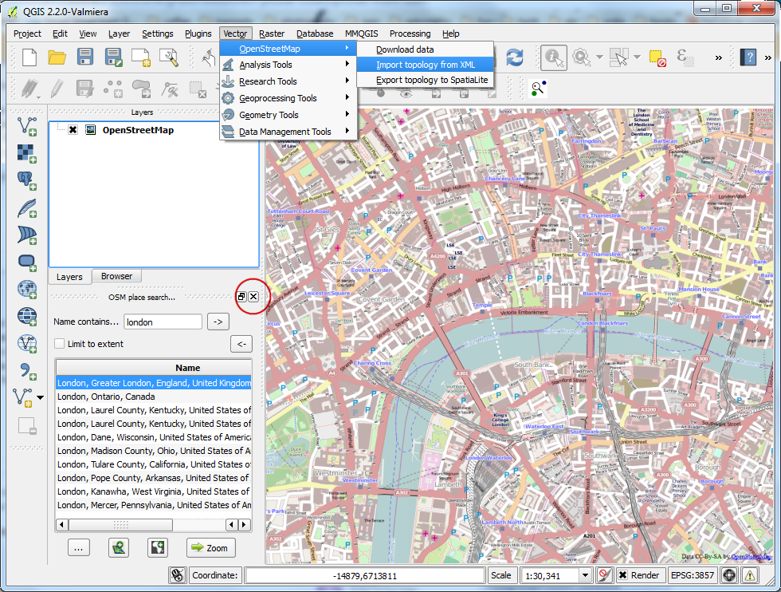
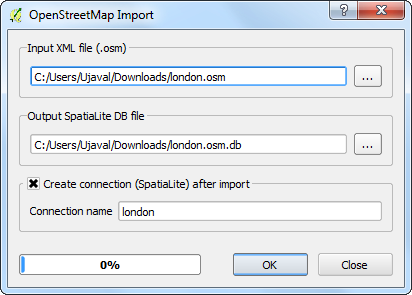
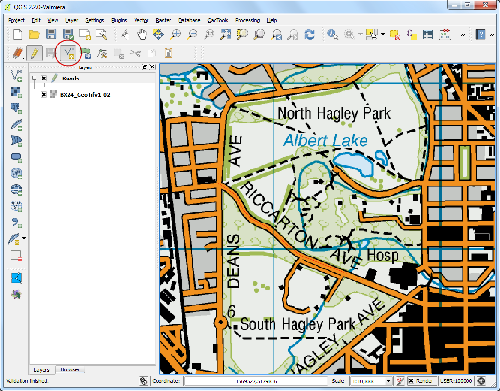

Nearest Neighbor Analysis¶
GIS is very useful is analyzing spatial relationship between features. One such analysis is finding out which features are closest to a given feature. QGIS has a tool called Distance Matrix which helps with such analysis. In this tutorial, we will use 2 datasets and find out which points from one layer are closest to which point from the second layer.
Overview of the task¶
Given the locations of all known significant earthquakes, find out the nearest populated place for each location where the earthquake happened.
Other skills you will learn¶
- How to do table joins in QGIS. (See Performing Table Joins for detailed instructions.)
Get the data¶
We will use NOAA’s National Geophysical Data Center’s Significant Earthquake Database as our layer represenging all major earthquakes. Download the tab-delimited earthquake data.
Natural Earth has a nice Populated Places dataset. Download the simple (less columns) dataset
For convenience, you may directly download a copy of both the datasets from the links below:
Procedure¶
- Open Layer ‣ Add Delimited Text Layer and browse to the downloaded signif.txt file.

- Since this is a tab-delimited file, choose Tab as the File format. The X field and Y field would be auto-populated. Click OK.
Note
You may see some error messages as QGIS tries to import the file. These are valid errors and some rows from the file will not be imported. You can ignore the errors for the purpose of this tutorial.

- As the earthquake dataset has Latitude/Longitude coordinates, choose WGS 84 EPSG:436 as the CRS in the Coordinate Reference System Selector dialog.

- The earthquake point layer would now be loaded and displayed in QGIS. Let’s also open the Populated Places layer. Go to Layer ‣ Add Vector Layer.

- Browse to the downloaded ne_10m_populated_places_simple.zip file and click Open. Select the ne_10m_populated_places_simple.shp as the layer in the Select layers to add... dialog.

- Zoom around and explore both the datasets. Each purple point represents the location of a significant earthquake and each blue point represents the location of a populated place. We need a way to find out the nearest point from the populated places layer for each of the points in the earthquake layer.

- Go to Vector ‣ Analysis Tools ‣ Distance Matrix.

- Here select the earthquake layer signif as the Input point layer and the populated places ne_10m_populated_places_simple as the target layer. You also need to select a unique field from each of these layers which is how your results will be displayed. In this analysis, we are looking to get only 1 nearest point, so check the Use only the nearest(k) target points, and enter 1. Name your output file matrix.csv, and click OK.
Note
A useful thing to note is that you can even perform the analysis with only 1 layer. Select the same layer as both Input and Target. The result would be a nearest neighbor from the same layer instead of a different layer as we have used here.

- Once your file is generated, you can view it in Notepad or any text editor. QGIS can import CSV files as well, so we will add it to QGIS and view it there. Go to Layer ‣ Add Delimited Text Layer....

- Browse to the newly created matrix.csv file. Since this file is just text columns, select No geometry (attribute only table) as the Geometry definition. Click OK.

- You will the the CSV file loaded as a table. Right-click on the table layer and select Open Attribute Table.

- Now you will be able to see the content of our results. The InputID field contains the field name from the Earthquake layer. The TargetID field contains the name of the feature from the Populated Places layer that was the closest to the earthquake point. The Distance field is the distance between the 2 points.
Note
Remember that the distance calculation will be done using the layers’ Coordinate Reference System. Here the distance will be in decimal degrees units because our source layer coordinates are in degrees. If you want distance in meters, reproject the layers before running the tool.

- This is very close to the result we were looking for. For some users, this table would be sufficient. However, we can also integrate this results in our original Earthquake layer using a Table Join. Right-click on the Earthquake layer, and select Properties.

- Go to the Joins tab and click on the + button.

- We want to join the data from our analysis result (matrix.csv) to this layer. We need to select a field from each of the layers that has the same values. Select the fields as shown below.

- You will see the join appear in the Joins tab. Click OK.

- Now open the attribute table of the Earthquakes layer by right-clicking and selecting Open Attribute Table.

- You will see that for every Earthquake feature, we now have an attribute which is the nearest neighbor (closest populated place) and the distance to the nearest neighbor.